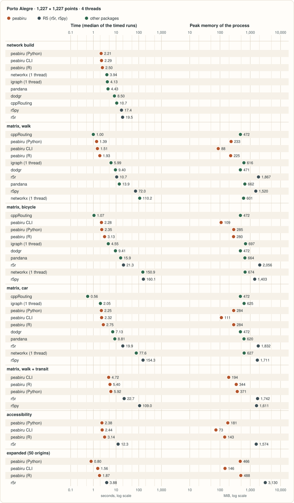
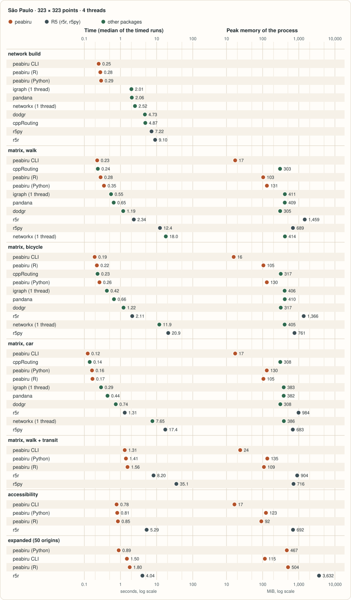

Benchmarks
peabiru next to the packages people use for travel-time matrices on OpenStreetMap
and GTFS, from R and Python: r5r and r5py, which run the same model, and dodgr, cppRouting,
networkx, igraph and pandana, which route streets with models of their own. Same inputs, same points,
same parameters where a package lets them be set, and for every package the time, the memory
and how far its answers are from peabiru's. The numbers below are generated from
data/benchmarks.json
(CSV), written by bench/site/run.py; the
container in bench/docker/ reproduces them.
This run was made in a container limited to 4 CPUs and 10 GiB on a Linux server that was doing other work at the same time, so read the times as a comparison between packages within one run, not as absolute figures; the date, the machine and its load are listed under the methodology.
Summary
r5r, r5py
cppRouting, igraph, dodgr, r5r, pandana, r5py, networkx
Porto Alegre, 1,227 × 1,227 points, 4 threads; median of 3 timed runs after a warm-up; memory is the peak of the whole process. Only r5r and r5py compute the same matrices as peabiru; the street packages use network models of their own, so their times answer a similar but not identical question (the differences are measured on the benchmarks page). Measured 2026-11-10.
Methodology
- Inputs: the Porto Alegre and São Paulo samples shipped with r5r
(
poa_osm.pbfwith the scheduledpoa_eptc.zipandpoa_trensurb.zipfeeds;spo_osm.pbfwith the frequency-basedspo.zip), no elevation raster. Origins and destinations are r5r's hexagonal grid of each city, all to all. Every package reads the same.pbf: dodgr and cppRouting throughosmdata_sc(), from the ways with ahighwaytag converted once to.osmXML withosmium(whatdodgr_streetnet_sc()would download; the conversion is not timed), networkx, igraph and pandana through pyrosm (OSMnx cannot read a.pbf; pyrosm reads it with OSMnx's network filters and exports an OSMnx-compatible graph). - Parameters: r5r's names and defaults, written out: departure 2019-05-13 14:00
(America/Sao_Paulo; the Porto Alegre feed only has afternoon service),
time_window = 10, percentile 50,max_trip_duration = 120, walking 3.6 km/h, cycling 12 km/h,max_lts = 2,max_rides = 3,draws_per_minute = 5,seed = 42. Accessibility: jobs, step function, cutoffs 30 and 60 min. Expanded matrix: first 50 origins × all destinations, with the breakdown. The other packages get the same walking and cycling speeds and the same 120-minute limit (applied afterwards where the query has none); what a package cannot honour is listed in the notes under each table. - What is timed: the routing call alone, separately from the network build, snapping the
points included. Each task runs in a fresh process that builds the network, runs the task once untimed
(warming up the JVM for r5r and r5py), then three timed runs; the page shows the median. The command-line
tool times build and routing inside the binary; it runs four processes and drops the first. Build time is
the median over the processes of a city; for the other packages it covers reading the
.pbfand building the graph of the mode (and the contraction for cppRouting and pandana). A package that would need more than about ten minutes per run is run on the first origins only, and the table says how many; its time is never extrapolated. - Memory: the peak resident set size of the whole process (network, warm-up and timed
runs; for r5r and r5py the R or Python process with its embedded JVM, heap limit 6 GiB), from
/usr/bin/time. - Threads: every package that can be told gets the same number of threads, 1 and then 4. r5py cannot: it uses every CPU it finds, so it only appears in the 4-thread runs, the number of CPUs of the container. networkx and igraph always use one thread, so they are measured once and shown with that time in every column.
- Machine: a container (
bench/docker/) limited to 4 CPUs and 10 GiB of memory on a shared 8-core server, whose other work is not under the benchmark's control; the load average at the start and at the end of the run is listed below. The packages ran one after the other, in four parts with pauses between them, each package whole within one part. The noise shows in the three timed runs of each task: the slowest is 9% above the fastest at the median and 45% at most, and the slowest network build is up to 86% above the fastest (pandana). - Same answers? Each package's matrix is compared with peabiru's over the same origins:
pairs reached by both, pairs only one of them reaches within 120 minutes, and the median and 90th percentile
of the absolute difference. peabiru and r5r report whole minutes, the street packages fractions of a minute.
For cycling, r5r and peabiru let cyclists ride only on streets up to traffic stress level 2
(
max_lts = 2) and make them walk the bicycle along the others; no street package models traffic stress, so their cycling times are shorter, by a median of 15 to 17 minutes here. r5py runs its own build of R5 (7.5.1) with no seed and 60 Monte Carlo draws, and reads a copy of the São Paulo feed with exact duplicate lines removed (it refuses them).
Packages on the same tasks
Every package that ran a task, fastest first, with the difference of its answers from peabiru's. Not every package can do every task: only peabiru, r5r and r5py model public transport from a GTFS schedule, and only peabiru and r5r compute accessibility and the expanded matrix.




Porto Alegre (1,227 points, all to all; poa_eptc.zip, poa_trensurb.zip)
| Package | Language | Time, 1 thread | Time, 4 threads |
|---|---|---|---|
| peabiru (Python) | Python | 2.28 s | 2.21 s |
| peabiru CLI | Rust | 2.23 s | 2.29 s |
| peabiru (R) | R | 2.28 s | 2.50 s |
| networkx | Python | 3.94 s | 3.94 s (1 thread) |
| igraph | Python | 4.13 s | 4.13 s (1 thread) |
| pandana | Python | 6.21 s | 4.43 s |
| dodgr | R | 9.14 s | 8.50 s |
| cppRouting | R | 10.9 s | 10.7 s |
| r5py | Python (Java) | – | 17.4 s |
| r5r | R (Java) | 18.9 s | 19.5 s |
| Package | Language | Time, 1 thread | Time, 4 threads | Peak memory (4 thr.) | Pairs reached by both | Only peabiru | Only this package | Median |Δ|, min | 90th pct |Δ|, min |
|---|---|---|---|---|---|---|---|---|---|
| cppRouting | R | 1.84 s | 1.00 s | 472 MiB | 731,379 | 57,303 | 18,558 | 2.6 | 8.9 |
| peabiru (Python) | Python | 6.81 s | 1.39 s | 233 MiB | 788,682 | 0 | 0 | 0.0 | 0.0 identical |
| peabiru CLI | Rust | 5.05 s | 1.51 s | 88 MiB | reference | ||||
| peabiru (R) | R | 5.29 s | 1.93 s | 225 MiB | 788,682 | 0 | 0 | 0.0 | 0.0 identical |
| igraph | Python | 5.99 s | 5.99 s (1 thread) | 616 MiB | 784,468 | 4,214 | 32,593 | 1.4 | 4.1 |
| dodgr | R | 30.8 s | 9.40 s | 471 MiB | 731,351 | 57,331 | 18,554 | 2.6 | 8.9 |
| r5r | R (Java) | 39.4 s | 10.7 s | 1,867 MiB | 788,682 | 0 | 0 | 0.0 | 0.0 identical |
| pandana | Python | 48.9 s | 13.9 s | 662 MiB | 784,081 | 4,601 | 32,986 | 1.4 | 4.2 |
| r5py | Python (Java) | – | 72.0 s | 1,520 MiB | 788,674 | 8 | 10,446 | 0.0 | 0.0 |
| networkx | Python | 110.2 s | 110.2 s (1 thread) | 601 MiB | 784,468 | 4,214 | 32,593 | 1.4 | 4.1 |
Notes on this task
- cppRouting: graph: 95,156 directed edges, largest component of dodgr's foot profile; points snap to the nearest vertex; every foot speed of dodgr's profile (5 km/h, 2 on steps) set to 3.6 km/h; routes follow dodgr's weighted time (road-type preferences), times are the unweighted travel time along them; no time limit in the query (times above the limit are dropped afterwards); input: osmium tags-filter w/highway to .osm XML, made once before the runs (1.4 s, not in the build time).
- igraph: graph: 17,263 nodes, 48,732 edges (pyrosm, simplified, largest connected component); points snap to the nearest node; igraph's distances() is single-threaded and has no time limit (times above the limit are dropped afterwards).
- dodgr: graph: 95,156 directed edges, largest component of dodgr's foot profile; points snap to the nearest vertex; every foot speed of dodgr's profile (5 km/h, 2 on steps) set to 3.6 km/h; routes follow dodgr's weighted time (road-type preferences), times are the unweighted travel time along them; no time limit in the query (times above the limit are dropped afterwards); input: osmium tags-filter w/highway to .osm XML, made once before the runs (2.0 s, not in the build time).
- pandana: graph: 17,263 nodes, 48,732 edges (pyrosm, simplified, largest connected component); points snap to the nearest node; threads set with OMP_NUM_THREADS; no time limit in the query (times above the limit are dropped afterwards).
- networkx: graph: 17,263 nodes, 48,732 edges (pyrosm, simplified, largest connected component); points snap to the nearest node; networkx is pure Python and single-threaded.
| Package | Language | Time, 1 thread | Time, 4 threads | Peak memory (4 thr.) | Pairs reached by both | Only peabiru | Only this package | Median |Δ|, min | 90th pct |Δ|, min |
|---|---|---|---|---|---|---|---|---|---|
| cppRouting | R | 2.08 s | 1.07 s | 472 MiB | 1,451,667 | 0 | 53,860 | 16 | 29 |
| peabiru CLI | Rust | 9.68 s | 2.28 s | 109 MiB | reference | ||||
| peabiru (Python) | Python | 11.7 s | 2.35 s | 285 MiB | 1,451,667 | 0 | 0 | 0.0 | 0.0 identical |
| peabiru (R) | R | 9.66 s | 3.13 s | 280 MiB | 1,451,667 | 0 | 0 | 0.0 | 0.0 identical |
| igraph | Python | 4.55 s | 4.55 s (1 thread) | 697 MiB | 1,451,667 | 0 | 53,862 | 17 | 33 |
| dodgr | R | 29.7 s | 9.41 s | 472 MiB | 1,451,667 | 0 | 53,860 | 16 | 29 |
| pandana | Python | 56.2 s | 15.9 s | 664 MiB | 1,451,667 | 0 | 53,862 | 17 | 33 |
| r5r | R (Java) | 78.0 s | 21.3 s | 2,056 MiB | 1,451,667 | 0 | 0 | 0.0 | 0.0 identical |
| networkx | Python | 150.9 s | 150.9 s (1 thread) | 674 MiB | 1,451,667 | 0 | 53,862 | 17 | 33 |
| r5py | Python (Java) | – | 160.1 s | 1,403 MiB | 1,451,662 | 5 | 3,320 | 0.0 | 0.0 |
Notes on this task
- cppRouting: graph: 96,310 directed edges, largest component of dodgr's bicycle profile; points snap to the nearest vertex; every bicycle speed of dodgr's profile (4 to 15 km/h by way type) set to 12 km/h; no traffic-stress (LTS) limit; routes follow dodgr's weighted time (road-type preferences), times are the unweighted travel time along them; no time limit in the query (times above the limit are dropped afterwards); input: osmium tags-filter w/highway to .osm XML, made once before the runs (1.4 s, not in the build time).
- igraph: no traffic-stress (LTS) limit: every way of pyrosm's cycling network is usable; graph: 14,691 nodes, 35,505 edges (pyrosm, simplified, largest connected component); points snap to the nearest node; igraph's distances() is single-threaded and has no time limit (times above the limit are dropped afterwards).
- dodgr: graph: 96,310 directed edges, largest component of dodgr's bicycle profile; points snap to the nearest vertex; every bicycle speed of dodgr's profile (4 to 15 km/h by way type) set to 12 km/h; no traffic-stress (LTS) limit; routes follow dodgr's weighted time (road-type preferences), times are the unweighted travel time along them; no time limit in the query (times above the limit are dropped afterwards); input: osmium tags-filter w/highway to .osm XML, made once before the runs (2.0 s, not in the build time).
- pandana: no traffic-stress (LTS) limit: every way of pyrosm's cycling network is usable; graph: 14,691 nodes, 35,505 edges (pyrosm, simplified, largest connected component); points snap to the nearest node; threads set with OMP_NUM_THREADS; no time limit in the query (times above the limit are dropped afterwards).
- networkx: no traffic-stress (LTS) limit: every way of pyrosm's cycling network is usable; graph: 14,691 nodes, 35,505 edges (pyrosm, simplified, largest connected component); points snap to the nearest node; networkx is pure Python and single-threaded.
| Package | Language | Time, 1 thread | Time, 4 threads | Peak memory (4 thr.) | Pairs reached by both | Only peabiru | Only this package | Median |Δ|, min | 90th pct |Δ|, min |
|---|---|---|---|---|---|---|---|---|---|
| cppRouting | R | 1.24 s | 0.56 s | 472 MiB | 1,471,459 | 12,146 | 21,834 | 2.1 | 5.6 |
| igraph | Python | 2.05 s | 2.05 s (1 thread) | 625 MiB | 1,483,605 | 0 | 21,924 | 5.0 | 9.1 |
| peabiru (Python) | Python | 11.5 s | 2.25 s | 284 MiB | 1,483,605 | 0 | 0 | 0.0 | 0.0 identical |
| peabiru CLI | Rust | 9.27 s | 2.32 s | 111 MiB | reference | ||||
| peabiru (R) | R | 10.6 s | 2.75 s | 284 MiB | 1,483,605 | 0 | 0 | 0.0 | 0.0 identical |
| dodgr | R | 21.7 s | 7.13 s | 472 MiB | 1,471,459 | 12,146 | 21,834 | 2.1 | 5.6 |
| pandana | Python | 27.6 s | 8.81 s | 620 MiB | 1,483,605 | 0 | 21,924 | 5.0 | 9.0 |
| r5r | R (Java) | 72.1 s | 19.9 s | 1,832 MiB | 1,483,605 | 0 | 0 | 0.0 | 0.0 identical |
| networkx | Python | 77.6 s | 77.6 s (1 thread) | 627 MiB | 1,483,605 | 0 | 21,924 | 5.0 | 9.1 |
| r5py | Python (Java) | – | 154.3 s | 1,711 MiB | 1,483,605 | 0 | 0 | 0.0 | 0.0 identical |
Notes on this task
- cppRouting: graph: 62,777 directed edges, largest component of dodgr's motorcar profile; points snap to the nearest vertex; car speeds are dodgr's (maxspeed, else per road class); turn_penalty = FALSE (dodgr's default): no turn restrictions; routes follow dodgr's weighted time (road-type preferences), times are the unweighted travel time along them; no time limit in the query (times above the limit are dropped afterwards); input: osmium tags-filter w/highway to .osm XML, made once before the runs (1.4 s, not in the build time).
- igraph: car speeds from OSMnx add_edge_speeds: maxspeed tag, else the mean maxspeed of the road class in this graph; no turn restrictions; graph: 7,711 nodes, 18,326 edges (pyrosm, simplified, largest connected component); points snap to the nearest node; igraph's distances() is single-threaded and has no time limit (times above the limit are dropped afterwards).
- dodgr: graph: 62,777 directed edges, largest component of dodgr's motorcar profile; points snap to the nearest vertex; car speeds are dodgr's (maxspeed, else per road class); turn_penalty = FALSE (dodgr's default): no turn restrictions; routes follow dodgr's weighted time (road-type preferences), times are the unweighted travel time along them; no time limit in the query (times above the limit are dropped afterwards); input: osmium tags-filter w/highway to .osm XML, made once before the runs (2.0 s, not in the build time).
- pandana: car speeds from OSMnx add_edge_speeds: maxspeed tag, else the mean maxspeed of the road class in this graph; no turn restrictions; graph: 7,711 nodes, 18,326 edges (pyrosm, simplified, largest connected component); points snap to the nearest node; threads set with OMP_NUM_THREADS; no time limit in the query (times above the limit are dropped afterwards).
- networkx: car speeds from OSMnx add_edge_speeds: maxspeed tag, else the mean maxspeed of the road class in this graph; no turn restrictions; graph: 7,711 nodes, 18,326 edges (pyrosm, simplified, largest connected component); points snap to the nearest node; networkx is pure Python and single-threaded.
| Package | Language | Time, 1 thread | Time, 4 threads | Peak memory (4 thr.) | Pairs reached by both | Only peabiru | Only this package | Median |Δ|, min | 90th pct |Δ|, min |
|---|---|---|---|---|---|---|---|---|---|
| peabiru CLI | Rust | 18.4 s | 4.72 s | 194 MiB | reference | ||||
| peabiru (R) | R | 19.3 s | 5.40 s | 344 MiB | 1,473,547 | 0 | 0 | 0.0 | 0.0 identical |
| peabiru (Python) | Python | 18.3 s | 5.92 s | 371 MiB | 1,473,547 | 0 | 0 | 0.0 | 0.0 identical |
| r5r | R (Java) | 72.4 s | 22.7 s | 1,742 MiB | 1,473,547 | 0 | 0 | 0.0 | 0.0 identical |
| r5py | Python (Java) | – | 109.0 s | 1,611 MiB | 1,473,526 | 21 | 260 | 0.0 | 0.0 |
| Package | Language | Time, 1 thread | Time, 4 threads | Peak memory (4 thr.) |
|---|---|---|---|---|
| peabiru (Python) | Python | 8.90 s | 2.38 s | 181 MiB |
| peabiru CLI | Rust | 10.3 s | 2.44 s | 73 MiB |
| peabiru (R) | R | 10.7 s | 3.14 s | 143 MiB |
| r5r | R (Java) | 39.1 s | 12.3 s | 1,574 MiB |
| Package | Language | Time, 1 thread | Time, 4 threads | Peak memory (4 thr.) |
|---|---|---|---|---|
| peabiru (Python) | Python | 1.77 s | 0.80 s | 466 MiB |
| peabiru CLI | Rust | 2.38 s | 1.56 s | 146 MiB |
| peabiru (R) | R | 2.98 s | 1.87 s | 488 MiB |
| r5r | R (Java) | 7.76 s | 3.88 s | 3,130 MiB |
São Paulo (323 points, all to all; spo.zip)
| Package | Language | Time, 1 thread | Time, 4 threads |
|---|---|---|---|
| peabiru CLI | Rust | 0.24 s | 0.25 s |
| peabiru (R) | R | 0.26 s | 0.28 s |
| peabiru (Python) | Python | 0.26 s | 0.29 s |
| igraph | Python | 2.01 s | 2.01 s (1 thread) |
| pandana | Python | 2.66 s | 2.06 s |
| networkx | Python | 2.52 s | 2.52 s (1 thread) |
| dodgr | R | 4.36 s | 4.73 s |
| cppRouting | R | 4.95 s | 4.87 s |
| r5py | Python (Java) | – | 7.22 s |
| r5r | R (Java) | 8.91 s | 9.10 s |
| Package | Language | Time, 1 thread | Time, 4 threads | Peak memory (4 thr.) | Pairs reached by both | Only peabiru | Only this package | Median |Δ|, min | 90th pct |Δ|, min |
|---|---|---|---|---|---|---|---|---|---|
| peabiru CLI | Rust | 0.82 s | 0.23 s | 17 MiB | reference | ||||
| cppRouting | R | 0.30 s | 0.24 s | 303 MiB | 99,897 | 3,114 | 10 | 4.2 | 11 |
| peabiru (R) | R | 0.85 s | 0.28 s | 103 MiB | 103,011 | 0 | 0 | 0.0 | 0.0 identical |
| peabiru (Python) | Python | 0.87 s | 0.35 s | 131 MiB | 103,011 | 0 | 0 | 0.0 | 0.0 identical |
| igraph | Python | 0.55 s | 0.55 s (1 thread) | 411 MiB | 102,995 | 16 | 228 | 1.3 | 3.2 |
| pandana | Python | 2.38 s | 0.65 s | 409 MiB | 102,991 | 20 | 226 | 1.2 | 3.1 |
| dodgr | R | 3.73 s | 1.19 s | 305 MiB | 99,900 | 3,111 | 10 | 4.2 | 11 |
| r5r | R (Java) | 7.38 s | 2.34 s | 1,459 MiB | 103,011 | 0 | 0 | 0.0 | 0.0 identical |
| r5py | Python (Java) | – | 12.4 s | 689 MiB | 103,011 | 0 | 102 | 0.0 | 0.0 |
| networkx | Python | 18.0 s | 18.0 s (1 thread) | 414 MiB | 102,995 | 16 | 228 | 1.3 | 3.2 |
Notes on this task
- cppRouting: graph: 43,408 directed edges, largest component of dodgr's foot profile; points snap to the nearest vertex; every foot speed of dodgr's profile (5 km/h, 2 on steps) set to 3.6 km/h; routes follow dodgr's weighted time (road-type preferences), times are the unweighted travel time along them; no time limit in the query (times above the limit are dropped afterwards); input: osmium tags-filter w/highway to .osm XML, made once before the runs (1.4 s, not in the build time).
- igraph: graph: 6,014 nodes, 18,076 edges (pyrosm, simplified, largest connected component); points snap to the nearest node; igraph's distances() is single-threaded and has no time limit (times above the limit are dropped afterwards).
- pandana: graph: 6,014 nodes, 18,076 edges (pyrosm, simplified, largest connected component); points snap to the nearest node; threads set with OMP_NUM_THREADS; no time limit in the query (times above the limit are dropped afterwards).
- dodgr: graph: 43,408 directed edges, largest component of dodgr's foot profile; points snap to the nearest vertex; every foot speed of dodgr's profile (5 km/h, 2 on steps) set to 3.6 km/h; routes follow dodgr's weighted time (road-type preferences), times are the unweighted travel time along them; no time limit in the query (times above the limit are dropped afterwards); input: osmium tags-filter w/highway to .osm XML, made once before the runs (2.1 s, not in the build time).
- networkx: graph: 6,014 nodes, 18,076 edges (pyrosm, simplified, largest connected component); points snap to the nearest node; networkx is pure Python and single-threaded.
| Package | Language | Time, 1 thread | Time, 4 threads | Peak memory (4 thr.) | Pairs reached by both | Only peabiru | Only this package | Median |Δ|, min | 90th pct |Δ|, min |
|---|---|---|---|---|---|---|---|---|---|
| peabiru CLI | Rust | 0.77 s | 0.19 s | 16 MiB | reference | ||||
| peabiru (R) | R | 0.89 s | 0.22 s | 105 MiB | 104,329 | 0 | 0 | 0.0 | 0.0 identical |
| cppRouting | R | 0.32 s | 0.23 s | 317 MiB | 104,329 | 0 | 0 | 15 | 27 |
| peabiru (Python) | Python | 0.94 s | 0.26 s | 130 MiB | 104,329 | 0 | 0 | 0.0 | 0.0 identical |
| igraph | Python | 0.42 s | 0.42 s (1 thread) | 406 MiB | 104,329 | 0 | 0 | 15 | 28 |
| pandana | Python | 2.24 s | 0.66 s | 410 MiB | 104,329 | 0 | 0 | 15 | 28 |
| dodgr | R | 3.79 s | 1.22 s | 317 MiB | 104,329 | 0 | 0 | 15 | 27 |
| r5r | R (Java) | 7.31 s | 2.11 s | 1,366 MiB | 104,329 | 0 | 0 | 0.0 | 0.0 identical |
| networkx | Python | 11.9 s | 11.9 s (1 thread) | 405 MiB | 104,329 | 0 | 0 | 15 | 28 |
| r5py | Python (Java) | – | 20.9 s | 761 MiB | 104,329 | 0 | 0 | 0.0 | 0.0 identical |
Notes on this task
- cppRouting: graph: 43,536 directed edges, largest component of dodgr's bicycle profile; points snap to the nearest vertex; every bicycle speed of dodgr's profile (4 to 15 km/h by way type) set to 12 km/h; no traffic-stress (LTS) limit; routes follow dodgr's weighted time (road-type preferences), times are the unweighted travel time along them; no time limit in the query (times above the limit are dropped afterwards); input: osmium tags-filter w/highway to .osm XML, made once before the runs (1.4 s, not in the build time).
- igraph: no traffic-stress (LTS) limit: every way of pyrosm's cycling network is usable; graph: 4,974 nodes, 10,595 edges (pyrosm, simplified, largest connected component); points snap to the nearest node; igraph's distances() is single-threaded and has no time limit (times above the limit are dropped afterwards).
- pandana: no traffic-stress (LTS) limit: every way of pyrosm's cycling network is usable; graph: 4,974 nodes, 10,595 edges (pyrosm, simplified, largest connected component); points snap to the nearest node; threads set with OMP_NUM_THREADS; no time limit in the query (times above the limit are dropped afterwards).
- dodgr: graph: 43,536 directed edges, largest component of dodgr's bicycle profile; points snap to the nearest vertex; every bicycle speed of dodgr's profile (4 to 15 km/h by way type) set to 12 km/h; no traffic-stress (LTS) limit; routes follow dodgr's weighted time (road-type preferences), times are the unweighted travel time along them; no time limit in the query (times above the limit are dropped afterwards); input: osmium tags-filter w/highway to .osm XML, made once before the runs (2.1 s, not in the build time).
- networkx: no traffic-stress (LTS) limit: every way of pyrosm's cycling network is usable; graph: 4,974 nodes, 10,595 edges (pyrosm, simplified, largest connected component); points snap to the nearest node; networkx is pure Python and single-threaded.
| Package | Language | Time, 1 thread | Time, 4 threads | Peak memory (4 thr.) | Pairs reached by both | Only peabiru | Only this package | Median |Δ|, min | 90th pct |Δ|, min |
|---|---|---|---|---|---|---|---|---|---|
| peabiru CLI | Rust | 0.50 s | 0.12 s | 17 MiB | reference | ||||
| cppRouting | R | 0.20 s | 0.14 s | 308 MiB | 98,613 | 5,716 | 0 | 2.0 | 5.7 |
| peabiru (Python) | Python | 0.51 s | 0.16 s | 130 MiB | 104,329 | 0 | 0 | 0.0 | 0.0 identical |
| peabiru (R) | R | 0.49 s | 0.17 s | 105 MiB | 104,329 | 0 | 0 | 0.0 | 0.0 identical |
| igraph | Python | 0.29 s | 0.29 s (1 thread) | 383 MiB | 104,329 | 0 | 0 | 4.5 | 7.1 |
| pandana | Python | 1.56 s | 0.44 s | 382 MiB | 104,329 | 0 | 0 | 4.4 | 7.1 |
| dodgr | R | 2.83 s | 0.74 s | 308 MiB | 98,613 | 5,716 | 0 | 2.0 | 5.7 |
| r5r | R (Java) | 4.08 s | 1.31 s | 984 MiB | 104,329 | 0 | 0 | 0.0 | 0.0 identical |
| networkx | Python | 7.65 s | 7.65 s (1 thread) | 386 MiB | 104,329 | 0 | 0 | 4.5 | 7.1 |
| r5py | Python (Java) | – | 17.4 s | 683 MiB | 104,329 | 0 | 0 | 0.0 | 0.0 identical |
Notes on this task
- cppRouting: graph: 25,741 directed edges, largest component of dodgr's motorcar profile; points snap to the nearest vertex; car speeds are dodgr's (maxspeed, else per road class); turn_penalty = FALSE (dodgr's default): no turn restrictions; routes follow dodgr's weighted time (road-type preferences), times are the unweighted travel time along them; no time limit in the query (times above the limit are dropped afterwards); input: osmium tags-filter w/highway to .osm XML, made once before the runs (1.4 s, not in the build time).
- igraph: car speeds from OSMnx add_edge_speeds: maxspeed tag, else the mean maxspeed of the road class in this graph; no turn restrictions; graph: 3,519 nodes, 6,803 edges (pyrosm, simplified, largest connected component); points snap to the nearest node; igraph's distances() is single-threaded and has no time limit (times above the limit are dropped afterwards).
- pandana: car speeds from OSMnx add_edge_speeds: maxspeed tag, else the mean maxspeed of the road class in this graph; no turn restrictions; graph: 3,519 nodes, 6,803 edges (pyrosm, simplified, largest connected component); points snap to the nearest node; threads set with OMP_NUM_THREADS; no time limit in the query (times above the limit are dropped afterwards).
- dodgr: graph: 25,741 directed edges, largest component of dodgr's motorcar profile; points snap to the nearest vertex; car speeds are dodgr's (maxspeed, else per road class); turn_penalty = FALSE (dodgr's default): no turn restrictions; routes follow dodgr's weighted time (road-type preferences), times are the unweighted travel time along them; no time limit in the query (times above the limit are dropped afterwards); input: osmium tags-filter w/highway to .osm XML, made once before the runs (2.1 s, not in the build time).
- networkx: car speeds from OSMnx add_edge_speeds: maxspeed tag, else the mean maxspeed of the road class in this graph; no turn restrictions; graph: 3,519 nodes, 6,803 edges (pyrosm, simplified, largest connected component); points snap to the nearest node; networkx is pure Python and single-threaded.
| Package | Language | Time, 1 thread | Time, 4 threads | Peak memory (4 thr.) | Pairs reached by both | Only peabiru | Only this package | Median |Δ|, min | 90th pct |Δ|, min |
|---|---|---|---|---|---|---|---|---|---|
| peabiru CLI | Rust | 4.90 s | 1.31 s | 24 MiB | reference | ||||
| peabiru (Python) | Python | 5.45 s | 1.41 s | 135 MiB | 104,321 | 0 | 0 | 0.0 | 0.0 identical |
| peabiru (R) | R | 5.43 s | 1.56 s | 109 MiB | 104,321 | 0 | 0 | 0.0 | 0.0 identical |
| r5r | R (Java) | 25.4 s | 8.20 s | 904 MiB | 104,321 | 0 | 0 | 0.0 | 0.0 identical |
| r5py | Python (Java) | – | 35.1 s | 716 MiB | 104,321 | 0 | 2 | 0.0 | 1.0 |
| Package | Language | Time, 1 thread | Time, 4 threads | Peak memory (4 thr.) |
|---|---|---|---|---|
| peabiru CLI | Rust | 2.89 s | 0.78 s | 17 MiB |
| peabiru (Python) | Python | 2.94 s | 0.81 s | 123 MiB |
| peabiru (R) | R | 3.08 s | 0.85 s | 92 MiB |
| r5r | R (Java) | 16.0 s | 5.29 s | 692 MiB |
| Package | Language | Time, 1 thread | Time, 4 threads | Peak memory (4 thr.) |
|---|---|---|---|---|
| peabiru (Python) | Python | 1.69 s | 0.89 s | 467 MiB |
| peabiru CLI | Rust | 2.14 s | 1.50 s | 115 MiB |
| peabiru (R) | R | 2.98 s | 1.80 s | 504 MiB |
| r5r | R (Java) | 9.65 s | 4.04 s | 3,632 MiB |
Why the results differ
- peabiru (R). The R package calls the same Rust core as the command line, so its matrices are the same.
- peabiru (Python). The Python package calls the same Rust core as the command line, so its matrices are the same.
- r5r. Same model: peabiru ports R5's street and transit logic, so the difference is zero (also checked pair by pair, for many more parameters, by the parity suites in
bench/compare/). - r5py. The same R5 engine (its own 7.5.1 build), so street matrices are expected to agree. It has no seed and always uses 60 Monte Carlo draws, so transit on a frequency-based feed (São Paulo) changes from run to run.
- dodgr. Its own network model: points snap to the nearest vertex (R5 snaps to the nearest point of an edge and adds the walk to it), its own rules for which ways each mode may use, routes chosen by preference-weighted time, car speeds from its own table per road class, waits at traffic lights, and no turn restrictions here.
- cppRouting. Routes the very same dodgr graph with contraction hierarchies, so its differences from peabiru are dodgr's; it differs from dodgr only where two routes take the same time.
- networkx. pyrosm's network (OSMnx's way filters, simplified, largest connected part), points snapped to the nearest node, one constant speed per mode (no traffic-stress limit for bicycles) and OSMnx's imputed car speeds with no turn restrictions.
- igraph. The same graph and weights as networkx, so the same differences; only ties between equal-time routes can differ.
- pandana. The same graph and weights as networkx; it snaps with its own nearest-node search, and routes with contraction hierarchies.
Other routing tools
These tools are not timed here: they answer a different question, run as a server, or could not be run on these inputs. Rows checked against each project's documentation in November 2026.
| Tool | Written in | Streets | Public transport | Main outputs | Why not timed |
|---|---|---|---|---|---|
| gtfsrouter | R and C++ | only for transfers between stops | GTFS timetables | routes between stops, travel times from one stop to all stops, isochrones | computes stop-to-stop times, not times between points |
| m4ra | R and C++ (dodgr and gtfsrouter) | walk, bike, car | GTFS via gtfsrouter | multimodal travel-time matrices from points to the street network | not on CRAN; version 0.1.1.063 fails in m4ra_prepare_data() on both samples (the stop-to-stop matrix errors in every worker) |
| UrbanAccess + pandana | Python | walking network | GTFS as average headways (no schedule) | an integrated transit and walking graph for accessibility with pandana | its latest release (0.2.2, 2020) calls DataFrame.append, removed in pandas 2, so it needs an old Python; and an average-headway graph is a different model, not the same task |
| OpenTripPlanner | Java | walk, bike, car, bike and car sharing | GTFS and NeTEx, real-time updates (GTFS-RT, SIRI) | journey planning (itineraries) through a GraphQL server; travel-time analysis | a server, kept for a second round |
| OSRM | C++ | car, bicycle, foot profiles | no | routes, many-to-many tables, map matching, trips, as a server (contraction hierarchies or multi-level Dijkstra) | a server, kept for a second round |
| Valhalla | C++ | car, bicycle, pedestrian and more | multimodal routes (pedestrian + transit); not in its matrix service | routes, time and distance matrices, isochrones, map matching, as a server | a server, kept for a second round |